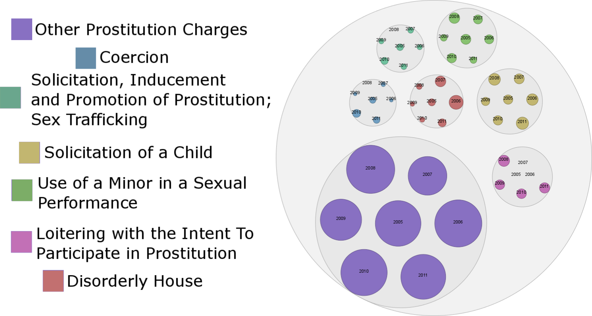

Human Trafficking in Minnesota
MN is the 13th largest center for child sex trafficking (FBI) and we all need to help.
Trafficking is being reported in your community. (2012)
Being reported by community members like you. (2012)
If you see someone in need, connect with the NHTRC
Text “BeFree” (233733)
Call 1-888-373-7888
